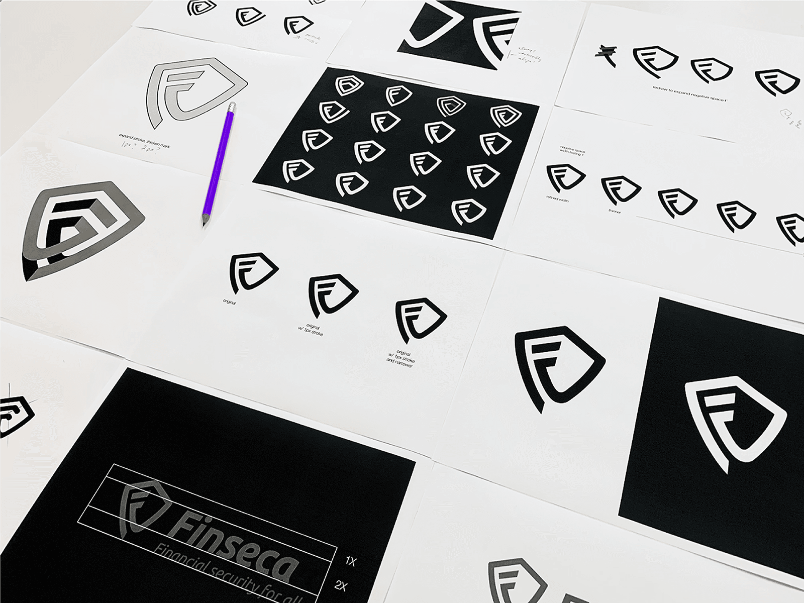
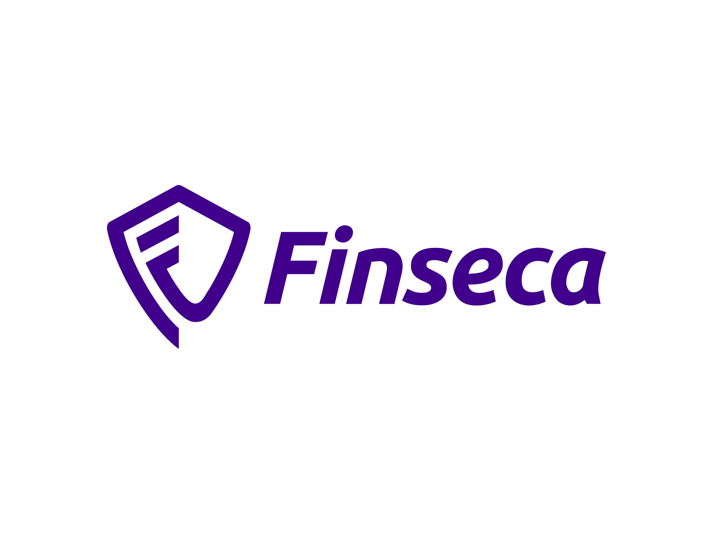
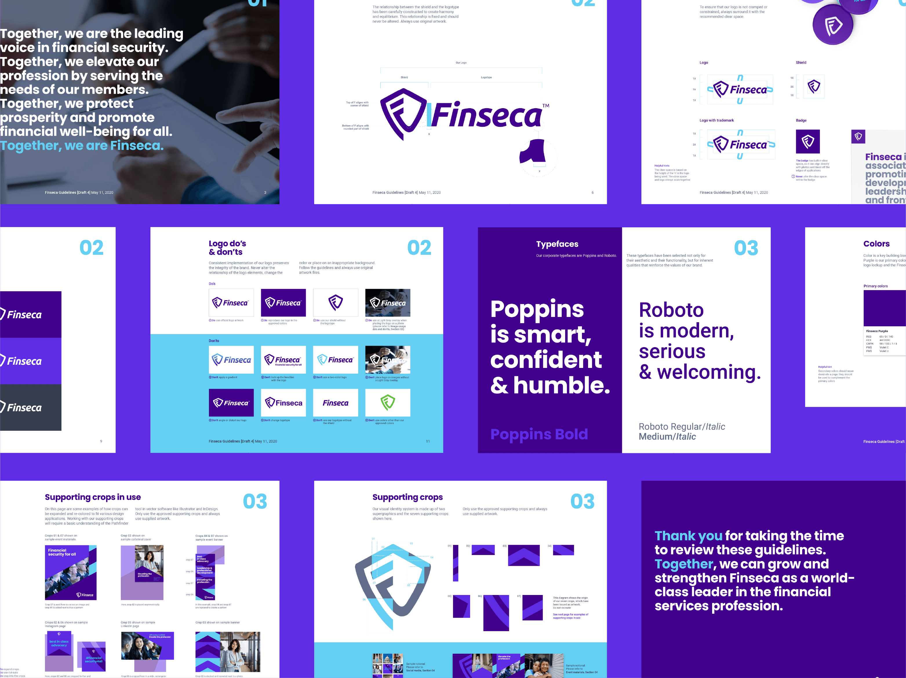
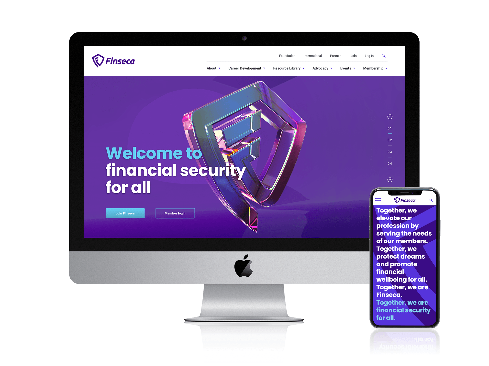
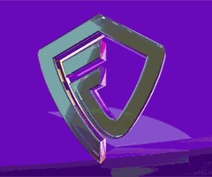
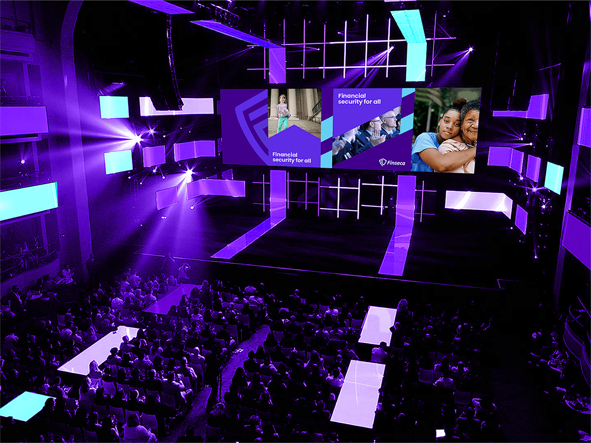

Finseca
Rebranding and digital experience for a unified financial security association
Finseca was established in 2020 through the merger of two prominent industry groups, AALU and GAMA International, aiming to unify the financial security profession and advocate for financial well-being for all.
As the design lead focusing on motion and UI/UX, I collaborated with the Thackway McCord team—Kat McCord, Fuchen Kuang, Simon Thackway, and Jonathan Paisner—alongside 3D support from Scyld Bowring and web development by WDG. Our objective was to create a cohesive brand identity and digital presence that resonated with both legacy members and new audiences.
The visual identity features a shield icon symbolizing protection, with a subtle double-F mark representing the merger of the two founding organizations. A politically neutral purple palette was chosen to position the Washington, D.C.-based group effectively within the advocacy landscape.
I led the development of comprehensive brand guidelines covering logo usage, typography, color palette, and application examples across various media, ensuring consistent implementation across all touchpoints.
The rebranding effort was recognized with awards, including Silver at the 2020 Wolda Awards.
Shield of protection
The shield icon was crafted to symbolize the protective nature of financial security professionals. It features a subtle double-F mark that represents the merger of the two founding organizations while creating a distinctive, ownable symbol that stands out in the financial services landscape.
The 3D rendering of the shield creates depth and dimension, allowing the mark to be used effectively across digital platforms while maintaining its symbolism of strength and protection.
Strategic discovery
Conducted stakeholder interviews, competitive analysis, and member research with the Thackway McCord team to identify key opportunities for the merged organization. Explored the evolving landscape of financial security advocacy to position Finseca effectively.
Naming & brand development
Led the creation of the distinctive "Finseca" name through a collaborative process with leadership from both legacy organizations. Developed a comprehensive brand strategy centered around the concept of "financial security for all."
Visual identity creation
Designed the shield-based logo with integrated double-F symbolism, representing both protection and the merger of two organizations. Collaborated with Fuchen Kuang to develop a strategic color system with politically neutral purple as the primary brand color.
Digital experience design
Shaped the website architecture, user interface, and content strategy to communicate Finseca's mission. Partnered with WDG to create dynamic digital templates for ongoing content development.
Motion & 3D development
Created distinctive 3D animations of the shield mark for video content and digital applications. Worked with Scyld Bowring to develop motion guidelines for consistent animation across platforms.
Launch campaign
Designed comprehensive launch materials, including announcement videos, digital marketing assets, and member communications. Coordinated rollout across multiple channels to effectively introduce the new organization.
Agency: Thackway McCord
Creative Direction: Kat McCord
Design: Fuchen Kuang
Strategy: Simon Thackway, Jonathan Paisner
Website: WDG
3D Work: Scyld Bowring
Awards: Indigo Design Awards 2021 (Silver), Wolda 2020 (Gold)
Political neutrality by design
As a Washington DC-based advocacy organization, Finseca needed to maintain political neutrality while establishing a strong visual presence. I directed the color strategy, selecting purple as the primary brand color to sit at the intersection of red and blue and visually represent the organization's bipartisan approach.
This color choice extends beyond symbolism to practical applications, helping Finseca navigate the complex political landscape while maintaining effective relationships across the political spectrum.